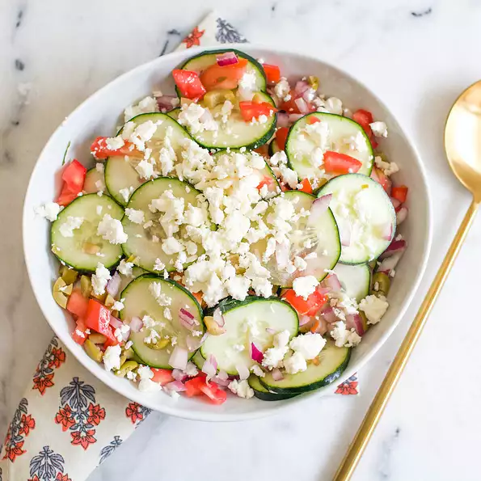

Standard Greek Salad

Ingredients
- 5 cucumbers, sliced
- 5 large tomatoes, coarsely chopped
- ½ red onion, chopped
- 1 (4 ounce) package feta cheese, crumbled
- 1 (2.25 ounce) can pitted green olives, chopped
- ¼ cup red wine vinegar
Steps
- In a large bowl, toss together cucumbers, tomatoes, red onion, feta cheese, and green olives. Sprinkle with red wine vinegar. Refrigerate until serving.